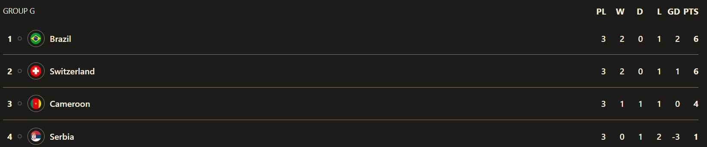

Day 13
Final Matchday in Groups G and H
Group H
Ghana v Uruguay and Portugal v South Korea
We called this group the “Group of Death”, at the very least me. It delivered massively on the final matchday. Uruguay prevented Ghana from getting revenge for 2010 but Korea provided it anyways by pipping Uruguay on goals scored(4 to Uruguay’s 2) by beating Portugal who had a host of rotations. They have “dreamed” and they have achieved passage into the Round of 16. Let’s get into each match.
Match 1
Uruguay prevents Ghana revenge. Ghana do the same thing again. Farewell Suarez and Cavani. Damn you Ghana, I thought you could really pose a threat but this grudge match turned into a damp squib. This was complete Uruguay domination in terms of chances but a moment of controversy in the 16th minute where a penalty was given to Ghana after a foul by the keeper on Kudus who lifted the ball just past his outstretched hands. But Captain Andre Ayew had his penalty saved and the goalie made up for his mistake by making a great save. Funny thing you know: Asamoah Gyan missed a penalty against Uruguay in 2010 and Ghana got knocked out. Now Ayew misses his penalty and Ghana are knocked out but now its Uruguay who will be joining them after what happened in the other game. The goals came from a brace by De Arrascaeta. Man has great experience and does well. The first came after a cross missed Ghana’s defense 😅 and came straight to Suarez who floored a defender before shooting and it was saved before being bundled in by De Arrascaeta. Suarez switched on his prime form all of a sudden, one highlight being him nutmegging Inaki Williams 😆. The second came after a good passage of play led to Suarez who looped the ball perfectly for him for the volley. Later on, once it was notified that Korea had scored a stoppage time winner against Portugal, Uruguay needed one more goal to go through on Goal Difference. Despite all the pressure they posed(Coates did a Pique by going forward in attack) they were not clinical and it was crushing for Suarez to see such a pathetic showing in front of goal. Cavani was lackluster. He got a header on target but was offside anyways and he went diving for a penalty. Word of advice: Sometimes actually trying to get the ball on target is better than looking for a penalty. Anyways it is most definitely going to be the last WC for Suarez and Cavani which I think should mean a change of system hopefully and a bigger focus on Nunez up top and having more than 2 in the middle of the park.
Ghana
Uruguay
Match 2
Dreamers make it through. Son comes through for his country. Hello from the other side by Cristiano Ronaldo
Korea have done a madness by pushing to the Round of 16 by beating Portugal. Son has finally delivered when they needed him most. It was a whole set of rotations from Portugal barring a few like Pepe, D.Costa and Ronaldo. The lead came via Ricardo Horta from a Dalot cross(He got in so easily and maybe the Cancelo and Dalot combination I mentioned is probably the way to go for Portugal). The lead didn’t last long from 5 minutes as Korea managed to get back into it with a helping hand from none other than Cristiano Ronaldo who made a scuffed clearance which fell perfectly for the defender to score the equalizer(That’s what I meant when I said Hello from the other side). Apart from a few chances for Ronaldo there was not anything much that happened. So as it stands Korea are not going through. But the sub of Hwang Hee Chan changed it and made a huge difference. The corner was botched by Portugal and the counter was on and it was led by Son who was quickly closed down but he managed to find Hwang by nutmegging Dalot 😑 and he kept his composure to finish it and Korea were going through on goals scored(That’s why 0-0’s can bite you). Sadly the other game was behind by around 5 minutes 😅 so Korea had to wait till the Uruguay game was done to know for certain and sure enough they had done it. Later on, “Dreamers” which was the so-called “official” WC track by Jung Kook from BTS was blasted in the stadium which was nice to see.
South Korea
Portugal
Group H table
Group G
Serbia v Switzerland and Cameroon v Brazil
One interesting game with a record matched. One upset but at the expense of a red card 😅. These results now mean that Brazil and Switzerland are going through and will face South Korea and Portugal respectively. Let’s dissect both matches.
Match 3
5 goals and it was a Swiss win. Let’s break it down now. Switzerland were attacking from the get-go. No, literally their first chance came after 25 seconds but was saved twice by GK Milinkovic-Savic. The lead eventually came to the Swiss and it was scored by none other than Big Shaq. A powerful shot after Sow waited and set him up with the pass. Now Shaqiri has joined an elite club that only had Cristiano Ronaldo thus far by scoring in 5 consecutive tournaments and has scored in his 3rd World Cup. The only other players to do it are Messi and Ronaldo. Shaq loves playing in international tournaments. Serbia found an equalizer from Mitrovic who managed to score a pinpoint header from the cross by Tadic. Next Vlahovic(who didn’t even get a look in so far) managed to score after a bad touch from the defender. Next was Embolo who managed to score from close range after a great Widmer cross. The winner came from Freuler after a great set of passes including a backheel assist from Vargas.
Serbia
Switzerland
Match 4
Just 1 goal in it and Cameroon started both Choupo-Moting and Aboubakar and it paid off with Brazil doing hefty rotations. Sadly the main news apart from the winner from Aboubakar was the injuries sustained by Alex Telles and Gabriel Jesus which is difficult news only in defense as Brazil’s attack is stacked. This combined with Neymar’s rush to fitness after his ankle injury means Brazil is in a tough spot overall. Aboubakar’s finish was perfect. The cross was put in and he headed it in perfectly. Ederson was rooted to the spot. Sadly he was on a yellow card and took his shirt off to celebrate so he got the second yellow and got a red card. The way it was given though was funny. It is quite possibly the friendliest way to give a red card 😂.
Cameroon
Brazil

Group G table

THE KNOCKOUT BRACKET